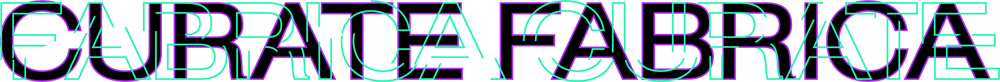

I am Andrea Rogolino aka Curate
Fabrica, a hands-on daydreamer, creative strategist, and marketing communications specialist.
You’ll find me working while listening to Nicolas Jaar or
Kate Bush.
I am steering up storytelling and content brand strategy for artistic and
cultural institutions, creative companies, behind the blue light screens or
physically in space.
Drop
me a line and say hi! ☺
Currently based in Amsterdam, since 2017 I am experimenting with marketing and communication as expanded tools and spaces for action, aiming to reach emerging publics out through cutting-edge narratives. I think and step out of the box to reimagine concepts and formats, working together with multidisciplinary teams, from designers to art directors. While pushing storylines forward, I activate projects in order to further explore brand identity, strategy, and to stimulate “business awareness”.
I always bring with me one main strong belief into the creative industries: brand setters are the ones who disrupt the rules to reinvent them. For that reason, I work with clients from scratch to shape brands embedded in their contexts and cultures.
I mostly enjoy working with you and starting to fabricate and create together. Drop me a message with nice words here

What is Curate Fabrica
Curate Fabrica is a new mode of producing, making possible an unconventional space for creativity by freelancing. Curate Fabrica is an inventive laboratory where conversation, brainstorming, mesh-up, and footage of creative thoughts are assembled to generate concrete ideas rather than functional objects. Curate Fabrica is a mindset placing research in futuristic scenarios but drawing projects on today.
Curate Fabrica handcrafts, reconverting the common idea of “fabrica”. The challenge resides in knowing the right moment when to translate an idea into planning, execution, and delivery of a story that needs to happen yet.
About this website
Portraits: Jesper Jensen
Website: Giulia Polenta
© 2021 Curate Fabrica
Curate Fabrica disseminates stories that enable public reaction and engagement. A clear communication is meant for a wider audience reach to deepen a relationship with them on the longer run.
With the main track in arts and culture, Curate Fabrica wants to shift its experience among commercial frameworks as well. The working method is always changing toward the most recent developments in marketing and communication. Curate Fabrica discovers and produces new ways for initiating and leading partnerships, shaping freelance projects, or going under longer-term collaborations.
Curate Fabrica are stories divided into chapters. Here you can find fragments, texts, visuals, or unpacked processes as the result of working together with public, communities, professionals, partners, and organizations.

Nico Vascellari, 2020
“In Dark Times We Must Dream with Open Eyes”. Taking inspiration from the Italian visual artist Nico Vascellari’s motto, working together means boldly breaking conventions and growing with a strong vision that transforms and brings under a new light sustainable, innovative and fueling ideas.
- Collaborations:
- Veem House for Performance
- DAS Graduate School - DAS Theatre
- Amsterdamse Hogeschool voor de Kunsten - Academie voor Theater en Dans
- Wild Vlees – Francesca Lazzeri
- Santarcangelo Festival (Italy)
- Esterni - Milano Film Festival (Italy)
- Holland Festival
- BNNVARA (The Netherlands)
- UNESCO
- University of Copenhagen
- Bocconi University (Italy)
- Kokoschka Revival (Italy)
- You can hire Curate Fabrica for:
- Brand strategy
- Creative consultancy
- Marketing, Communications and PR management and strategy
- Multi-channel community engagement
- Partnership development
- Fundraising campaign
- Educational and discursive programming
- Project management and development
- Artistic production
- What you can also ask Curate Fabrica for:
- Guiding and leading (small) creative teams
- Mentoring, tutoring, theory advisor and external eye for creative processes
- Conducting workshops, laboratories and research (among different formats and environments)

Imagining starts off the process. Experience the change. Whose future we don’t know yet. Pick a
chapter below and take a look